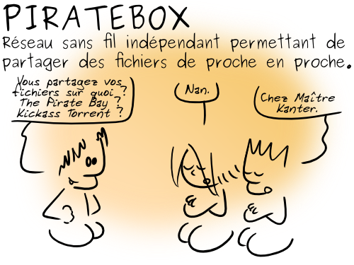
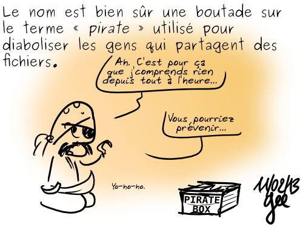

Pirater
Bienvenue
Tout d'abord, soyez rassurés, il n'y a rien d'illégal ou de dangereux à vous connecter sur une pirate box. PirateBox971 est un réseau social où vous pouvez anonymement discuter et partager des fichiers avec les personnes autour de vous !
L'objectif de la pirate box et de ses derivées est de favoriser le partage et la diffusion de données et de documents numériques libres ou dans le domaine public, ainsi que de renforcer le lien social. Il ne s'agit en aucune façon de promouvoir une quelconque pratique de vol, de contrefaçon ou de piraterie ...
La piraterie désigne une forme de banditisme pratiquée sur mer par des marins appelés pirates. Cependant, les pirates ne se limitent pas seulement aux pillages de navire, et attaquent parfois de petites villes côtières.
PirateBox971, c'est un ensemble de réseaux parallèles, spécialement conçus et développés pour le partage de fichier et le chat, volontairement déconnectés de l'Internet pour préserver au maximum votre anonymat.
Profitez-en, discutez avec les autres et partagez tous les fichiers et toutes les infos que vous souhaitez ...

images Le Geektionnerd par Simon « Gee » Giraudot
data-l10n-id=licence CC BY-SA 2.0 FR